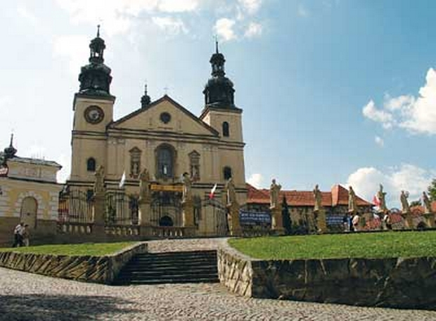

KALWARIA ZEBRZYDOWSKA

W Kalwarii Zebrzydowskiej uderza malowniczy krajobraz kulturowy o wymowie duchowej. Otoczenie naturalne, w które wpisują się symboliczne miejsca odnoszące się do Męki Pańskiej oraz do życia Matki Boskiej, pozostało prawie niezmienione od XVII w. Kalwaria Zebrzydowska nadal stanowi cel pielgrzymek.